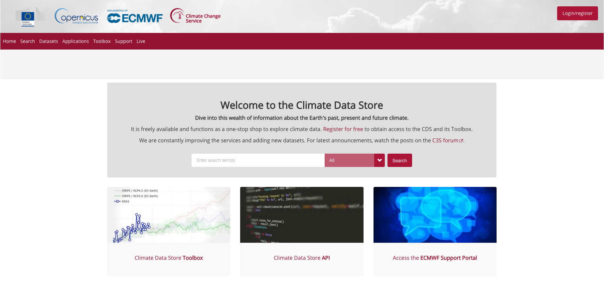
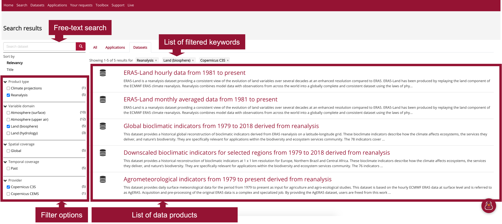
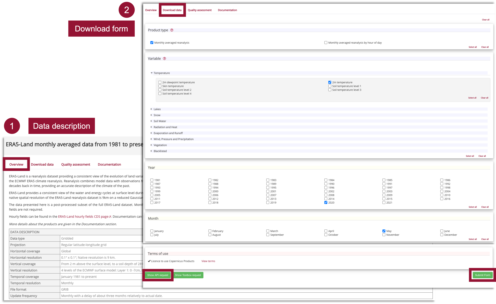
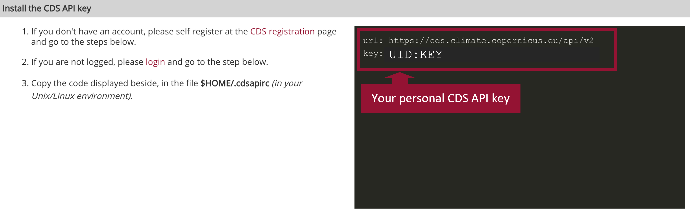
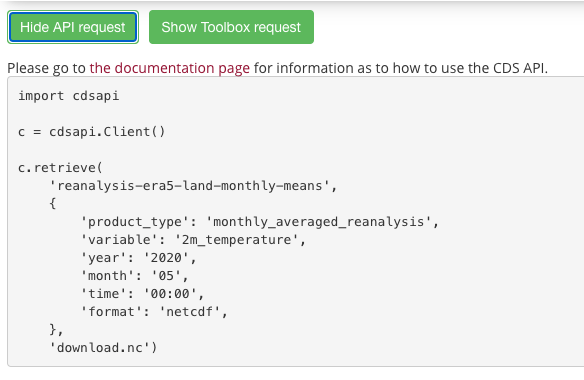

Climate Data Store Tutorial#
This notebook provides you an introduction to the Copernicus Climate Data Store (CDS), an overview of the type of data that can be accessed and gives practical examples how to access and retrieve data from the CDS.
Outline#
1 - About
2 - C3S data retrieval
2.1 - Access data interactively via the CDS web interface
2.2 - Access data programmatically with the CDS API
2.3 - Further resources
3 - Example data request
| Run the tutorial via free cloud platforms: |
|
 |
|
|---|
About#
The Copernicus Climate Data Store (CDS) is the data access portal of the Copernicus Climate Change Service (C3S) and offers access to data and applications about the Earth’s past, present and future climate.

Data retrieval#
There are two ways to access data from the Copernicus Climate Data Store (CDS):
interactively via the CDS web interface, or
programmatically with the CDS API
Access data interactively via the CDS web interface#
The CDS web interface allows you to interactively browse, select and download datasets offered by the CDS. First, under Datasets, you can browse and select the dataset you are interested in. In a second step, you can then specify details of the data download form you wish to submit.
Filter and select a dataset#
As a first step, you can browse and filter the dataset you are interested in. The Datasets interface allows you either to select data based on different categories, e.g. Product type, Variable domain, Spatial / Temporal coverage, but also offers a free text search. The list of datasets in the main window allows you to select the dataset you are interested in.

Once you selected a dataset, you then get redirected to a data description section, which provides you an overview of the chosen dataset as well as the option to specify the dataset you would like to download and to also to submit the "Download data" form.
Submit the Download data form#
The Data description section (see 1) provides you an overview of the dataset, including a list of variables that are available. Under the tab Download data, the "Download data" form opens (see 2) which allows you to interactively filter the dataset based on specific keywords, e.g.:
Product typeVariableYear / Month / TimeGeographical areaFormat
At the end of the "Download data" form, you get three options: Show API request, Show Toolbox request and Submit Form. If you want to download the data interactively, the data requests will be executed as soon as you click on the Submit Form button.
Note: You need to be logged into the ADS portal and you have to accept the Terms and Conditions of the dataset before being able to download data.
You will need the Show API request, if you want to request data programmatically. See Section 2.2 for further information. You will need the Show Toolbox request if you want to request data via the CDS Toolbox. Learn more about the CDS Toolbox here.
Under the tab
Your requests in the main menu, you can monitor the status of your data requests.
Access data programmatically with the CDS API#
The Climate Data Store Application Program Interface (CDS API) is a Python library which allows you to access data from the CDS programmatically. The library is available for both Python versions, Python 2.7.x and Python 3, but we recommend to use the library under Python 3. In order to use the CDS API, follow the steps below:
Install the CDS API key#
Self-register at the CDS registration page (if you do not have an account yet)
Login to the CDS portal and go to the api-how-to page
Copy the CDS API key displayed in the black terminal window in a file under
$HOME/.cdsapirc
Note: You find your CDS API key displayed in the black terminal box under the section Install the CDS API key. If you do not see a URL or key appear in the black terminal box, please refresh your browser tab.

The code below creates the file under your current working directory. Make sure to replace the ################ with your personal CDS API key.
%%writefile ./.cdsapirc
url: https://cds.climate.copernicus.eu/api/v2
key: ##############################
Overwriting ./.cdsapirc
Alternative: Set CDS API credentials manually#
Alternatively, you can also define variables for url and key. These variables can then be set when you define the cdsapi.Client(url=URL, key=KEY) in your script (see next section for the different components of a data retrieval request).
Please note: in the workflow notebooks, we will use this modality and set manually the CDS API key information for the data retrievals.
URL = 'https://cds.climate.copernicus.eu/api/v2'
KEY = '############################'
Install the CDS API client#
The next step is to install the CDS API client. You can do this with the package management system pip.
!pip install cdsapi
Use the CDS API client for data access#
Once the CDS API is installed, it can be used to request data from the Climate Data Store.
Below, you see the principle of a data retrieval request. You always have to make sure to first import the cdsapi and define a cdsapi.Client() before you are able to execute an API request. You can use the web interface to browse through the datasets. At the end of the "Download data" form, there is the option to choose Show API request. If you click this button, the API request appears (see example below), which you can copy paste into your coding workflow.

For data originating from ECMWF's Meteorological and Archival System (MARS), data is stored on a grid with longitudes from 0 to 360 degrees. It can be reprojected to a regular geographic latitude-longitude grid, by setting the keyword argument
area and grid. Per default, data is retrieved in GRIB. If you wish to retrieve the data in netCDF, you have to specify it by using the keyword argument format.Further resources#
Example data request#
Example: ERA5-Land hourly data from 1950 to present#
Data used in 113_c3s_climate_indices
CDS API name: reanalysis-era5-land
Variable:
['10m_u_component_of_wind', '10m_v_component_of_wind','2m_temperature']Year:
[1981 to 2020]Month:
12Day:
15Time:
12:00Area:
[60, -10, 35, 30]# North, West, South, EastFormat:
netcdf
Note: the request above makes use of the keyword area, which enable you to retrieve only a geographical subset. The bounding box information are set as follows: [N, W, S, E]. When this keyword is set, the data is automatically projected to a grid from [-180, 180].
import cdsapi
c = cdsapi.Client()
c.retrieve(
'reanalysis-era5-land',
{
'variable': [
'10m_u_component_of_wind', '10m_v_component_of_wind', '2m_temperature',
],
'year': [
'1981', '1982', '1983',
'1984', '1985', '1986',
'1987', '1988', '1989',
'1990', '1991', '1992',
'1993', '1994', '1995',
'1996', '1997', '1998',
'1999', '2000', '2001',
'2002', '2003', '2004',
'2005', '2006', '2007',
'2008', '2009', '2010',
'2011', '2012', '2013',
'2014', '2015', '2016',
'2017', '2018', '2019',
'2020',
],
'month': '12',
'day': '15',
'time': '12:00',
'format': 'netcdf',
'area': [
60, -10, 35,
30,
],
},
'./data/era5-land_eur_1981_2020.nc')
This project is licensed under APACHE License 2.0. | View on GitHub